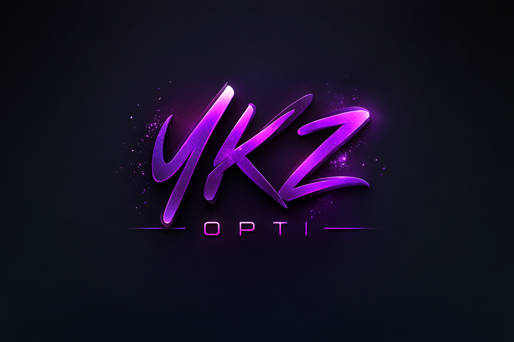
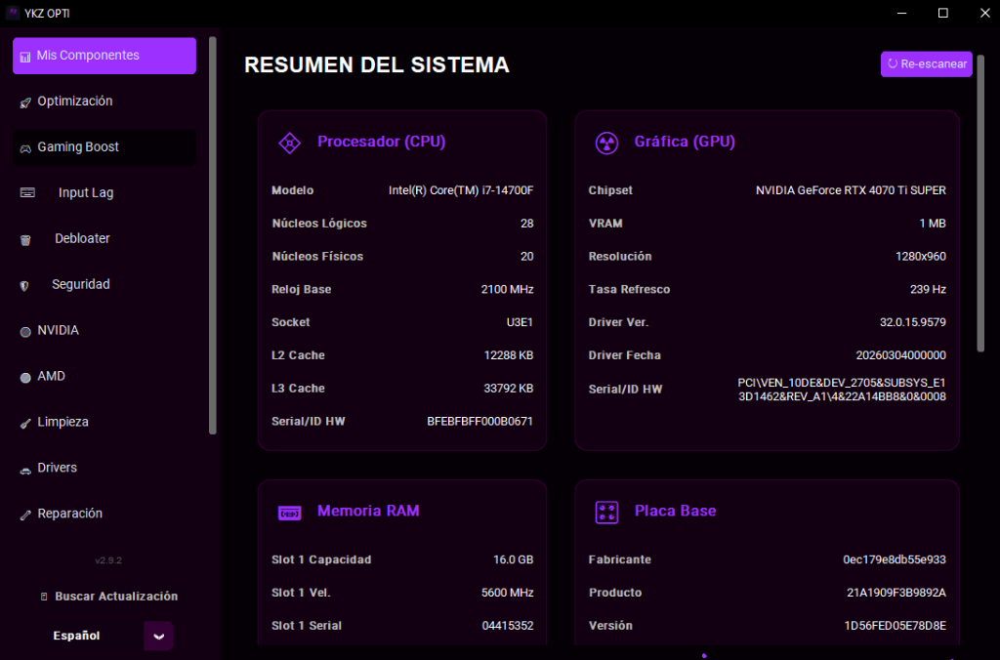
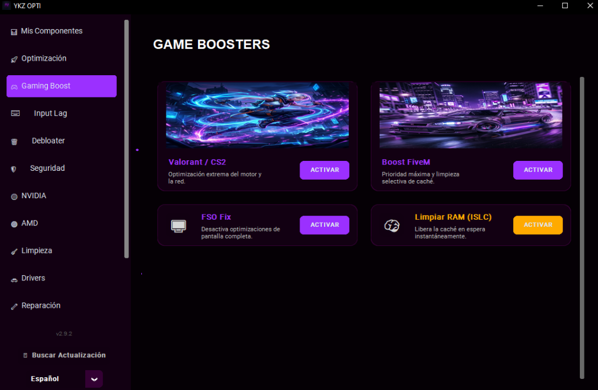
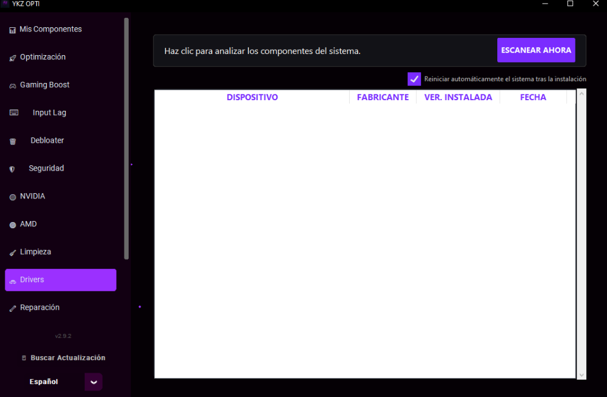

Diseñado con una interfaz intuitiva y potente, YKZ Optimizer combina años de experiencia en tuning de Windows en una sola suite. No solo limpia, sino que recalibra tu sistema para obtener la máxima estabilidad y fluidez posible.

Si te gusta YKZ Optimizer, considera hacernos una donación para seguir mejorando la herramienta.
Configuraciones extremas para Valorant, CS2 y FiveM. Prioridad de CPU y limpieza de caché automática.
NVIDIA & AMD Center. MSI Mode, limpieza de drivers y optimización de latencia DPC.
Elimina archivos basura, temporales y optimiza el registro de Windows sin riesgos.
FilterKeys Fix, USB Polling Rate y System Timer Resolution para la respuesta más rápida.
Perfiles específicos para portátiles, control de energía y mitigación de thermal throttling.
Elimina bloatware innecesario de Windows y crea puntos de restauración antes de cada cambio.
| Característica | Gratis | Premium |
|---|---|---|
| Optimización Básica | ||
| Limpieza de Temporales | ||
| Boost de Juegos (Valorant/FiveM) | ||
| Centro de Drivers Pro | ||
| Input Lag Extremo (FilterKeys) | ||
| Rendimiento Laptop Advanced | ||
| Soporte VIP & Actualizaciones | ||
| Activación de por vida |
Capturas reales del optimizador en acción.


